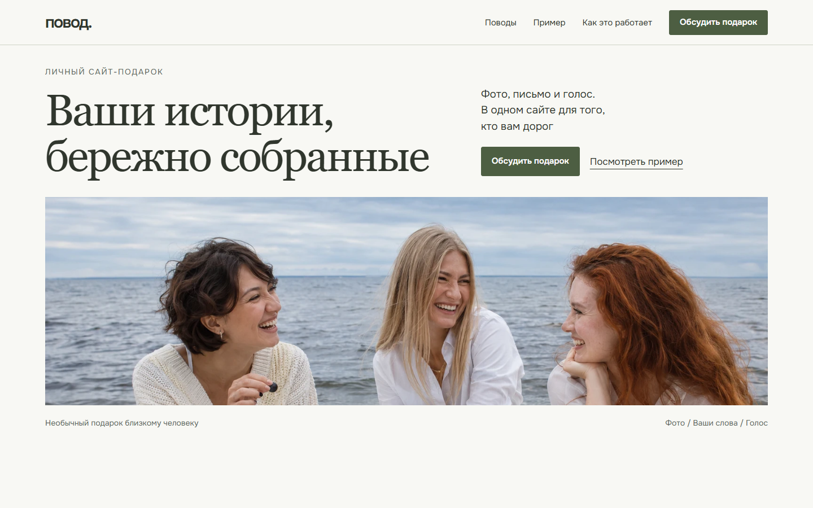

01. Тихая редакция
Крупная антиква, широкая фотография и открытый разворот истории
Пять самостоятельных страниц
Разные композиции одного продукта: личного сайта-подарка из фотографий, письма и голоса
Каждый вариант можно открыть, проверить на телефоне и забрать вместе с исходниками
Дизайнерские ориентиры
Фотографию, читаемость и ритм редакционных страниц. Чужие тексты, код и фотографии в эти лендинги не переносились
Заметки по референсамВ этой папке HTML, CSS, JavaScript, локальные шрифты и фотографии. Сборка и установка пакетов не нужны